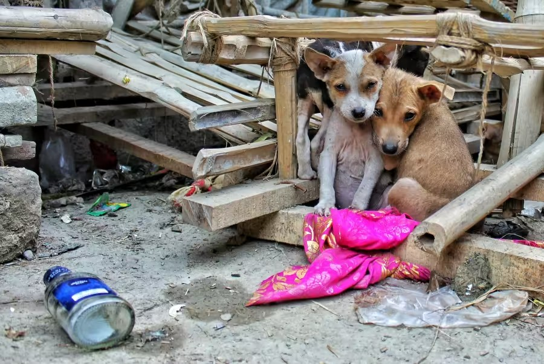

Somos uma organização sem fins lucrativos dedicada ao resgate,
cuidado e reabilitação de animais abandonados e em situação de
vulnerabilidade.
Desde 2005, já resgatamos centenas de cães e
gatos, promovendo adoção responsável e conscientização sobre
posse animal.
Telefone: (41) 99646-6251
E-mail: contato@patasunidas.org
Endereço: Rua Angelo Tozim, 1220 – Curitiba, PR
O endereço que você acessou não existe.
Obrigado! Sua doação foi registrada.
